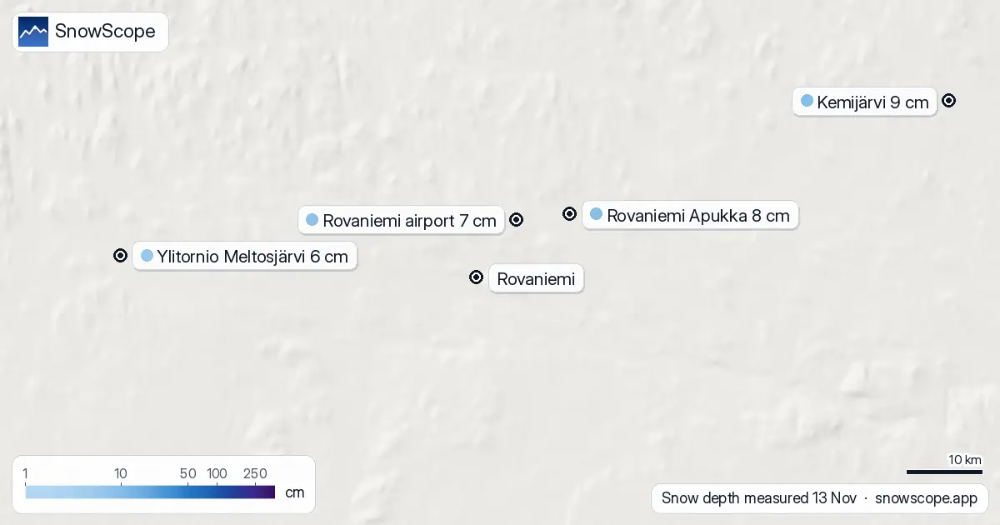

Rovaniemi husky rides and dog walks in the snow: 7 to 8 cm measured, farms, prices and rules (2026)
Rovaniemi has its first real snow. On the morning of 13 November the weather station at the airport, at 186 m, measured 7 cm, and the one at Apukka east of town 8 cm. A week earlier both stations showed bare ground. The city opened its first-snow ski track the same day, 450 m long, and says more tracks will follow. For husky farms that means the switch from carts to sleds is close.
See the live snow forecast for Rovaniemi in the SnowScope appSnow depth, powder alerts and the 3D map, free.
Three farms with clear dates and prices
Visit Rovaniemi lists a dozen husky companies. Three of them publish dates and prices clearly on their own pages:
Bearhill Husky runs self-drive tours on snow from 30 November 2026 to 4 April 2027; its family tour includes about 45 minutes of driving your own team over roughly 6 to 10 km, from 196 EUR. Raitola, a reindeer and husky farm, runs a 5 km husky safari of about one hour, from December to mid-April, for 144 EUR per adult. Arctic Circle Husky Park has a short visit with a 1 km ride, for 75 EUR per adult.
Before the snow season, several farms offer cart rides or shorter 'musher' rides where a guide drives. Ask what you are booking.
Daylight in late November
Rovaniemi sits on the Arctic Circle, so the days shrink quickly: about 5 hours 43 minutes of daylight on 15 November, under 4 hours by 30 November. The sun still rises in town in December, briefly. Book tours for the middle of the day if you want to see the landscape.
Walking your own dog on snow
Finland's everyman's rights are generous, with clear limits for dogs. Dogs are not allowed on maintained ski tracks, and the state forest service asks walkers to stay off the tracks too. In built-up areas a dog must be on a leash all year; elsewhere the leash rule applies from 1 March to 19 August. In national parks and other protected areas, always leash.
Rovaniemi is reindeer country: approaching reindeer with a dog, even for a photo, is forbidden. The city has two fenced dog parks, a lit one at Lainaanpuisto and a forest one at Ounasrinne, where dogs can run free. Some of the city's fitness trails are lit, which helps in the short days, but give skiers the track.
Tips for skiers
- Early-season snow is thin: farms may still use carts on some days in late November. Confirm the format when you book.
- With your own dog, the fenced parks are the safest place to let it run while reindeer are near the roads.
- Dress your dog for the cold too: short-haired dogs feel minus temperatures and salt on paws on town streets.
References and credits
- Finnish Meteorological Institute, open data (CC BY 4.0) en.ilmatieteenlaitos.fi/open-data
- Visit Rovaniemi, husky sled rides and farm visits (official tourism board) www.visitrovaniemi.fi/see-do/activities/husky-sled-rides-farm-visits/
- Bearhill Husky, self-driven tours bearhillhusky.com/winter-tours/self-driven-tours/
- Raitola, 5 km husky safari raitola.fi/husky-safaris/5km-husky-safari/
- Arctic Circle Husky Park, visit and 1 km ride huskypark.fi/activities/current-activities/visiting-package-and-a-thrilling-ride-1-km/
- City of Rovaniemi, winter sports places open, first-snow ski track (news, 13 Nov 2026) www.rovaniemi.fi/news/Talviliikuntapaikkoja-aletaan-avata-Rovaniemella-rinteet-ja-ensilumenlatu-auki,-luistelukenttia-jaadytetaan-/34981/16dd2bdf-0f50-4830-a793-9d9c2d28b425
- timeanddate, Rovaniemi sunrise and sunset, November 2026 www.timeanddate.com/sun/finland/rovaniemi?month=11&year=2026
- Metsähallitus luontoon.fi, everyman's rights www.luontoon.fi/en/activities/hiking-and-outdoor-recreation/everymans-rights
- Metsähallitus luontoon.fi, hiking with a dog www.luontoon.fi/en/activities/hiking-and-outdoor-recreation/tips/visitor-guidelines/hiking-with-a-dog
- City of Rovaniemi, dog parks www.rovaniemi.fi/Palvelut/Koira-aitaukset-ja-koirankakkapussiautomaatit/dee5c225-cbce-4d90-81f7-3d4495503dd3
About these numbers
Snow: morning readings of 13 November 2026 at the official weather stations of Sweden (SMHI), Finland (FMI) and Norway (MET Norway station reports, CC BY 4.0, as published by Ogimet); for the Norwegian slopes the national snow map seNorge (NVE and MET Norway, NLOD), an estimate. Operators: those listed by the official tourism board, with dates, durations and prices read on the operators' own pages on 13 November 2026; prices change, check before booking. Rules: national laws and municipal rules linked below.
Cite this report
For research, teaching or the press: the numbers and charts are free to reuse under CC BY 4.0 with this citation.
SnowScope (2026), Rovaniemi husky rides and dog walks in the snow: 7 to 8 cm measured, farms, prices and rules (2026), https://snowscope.app/blog/en/2026/11/rovaniemi-husky-rides-dog-walks-snow-guide-2026.html, accessed 2026-11-14
SnowScope (Atlas Labs). (2026, November 14). Rovaniemi husky rides and dog walks in the snow: 7 to 8 cm measured, farms, prices and rules (2026). SnowScope snow reports. https://snowscope.app/blog/en/2026/11/rovaniemi-husky-rides-dog-walks-snow-guide-2026.html
BibTeX
@misc{snowscope2026rovaniemihuskyridesdogwa,
author = {{SnowScope (Atlas Labs)}},
title = {Rovaniemi husky rides and dog walks in the snow: 7 to 8 cm measured, farms, prices and rules (2026)},
year = {2026},
month = nov,
howpublished = {\url{https://snowscope.app/blog/en/2026/11/rovaniemi-husky-rides-dog-walks-snow-guide-2026.html}},
note = {Published 2026-11-14 19:39 UTC; accessed 2026-11-14}
}· CC BY 4.0 · Methods, data and tools →
Follow Rovaniemi
Free: a message when fresh snow is coming, and the forecast every morning.
More snow reports

Kläppen snow depth in mid-November 2026: the weather station in Sälen, 13 km away, measured 45 cm on 13 November after 11 cm the day before; the resort reports 25 cm. Rain risk this week, opening 11 December, 46 past winters.

Idre Fjäll December skiing: 32 cm mid-mountain on a typical 15 December; 65 % of winters with 30 cm in mid-December, 76 % in Christmas week. Honest odds.

Himos snow in mid-November 2026: the weather stations around Jämsä measured 0 to 2 cm on 13 November; the first-snow cross-country loop opens on 14 November, the slope opening date is not set yet. Rain risk this week and 46 past winters.